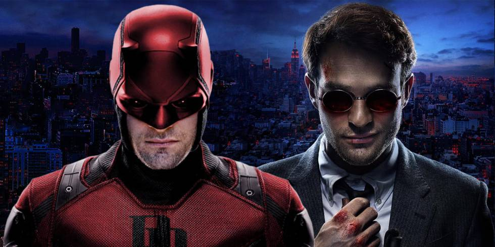

Matt Murdock: Demolidor
A série do Demolidor foi a que deu início a tudo, na qual o advogado Matt Murdock se juntou a Foggy Nelson em sua cruzada por justiça contra aqueles que transformaram Hell’s Kitchen em um verdadeiro inferno (se você é bom em inglês, sabe que tem um trocadilho aí). Só que as coisas ficaram um pouco mais feias quando a dupla se voltou contra Wilson Fisk, o Rei do Crime, além de descobrirem uma ameaça ainda mais sinistra por parte da organização Tentáculo. Na última temporada, Matt tomou algumas grandes decisões que podem assombrá-lo após se juntar a equipe.
Matt e Foggy acabaram se separando, pois ele já não aprovava mais o lado vigilante de seu amigo. Isso sem falar que Matt viu sua namorada, Elektra Natchios, morrer nas mãos do Tentáculo. E como ela foi ressuscitada como vilã por seus assassinos em Os Defensores, Matt precisará encarar uma enorme carga emocional. Podem ocorrer mais problemas para ele, já que ele revelou sua identidade para Karen Page, que, ironicamente, criou laços fortes com Frank Castle, o Justiceiro. Se levarmos em conta que Matt não está mais utilizando seu traje, mas ainda possui propensão à violência, pode ser que Karen tente fazer o Demolidor retornar de vez.